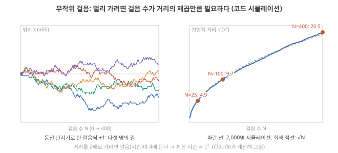
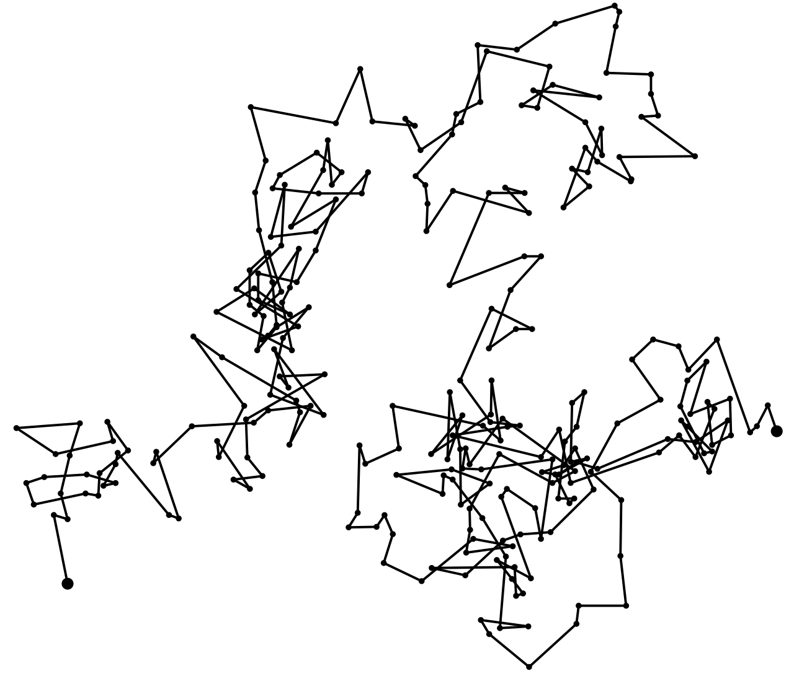
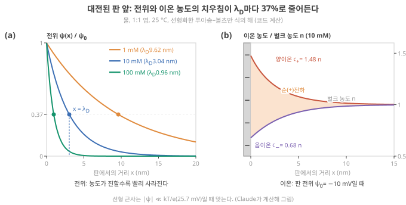
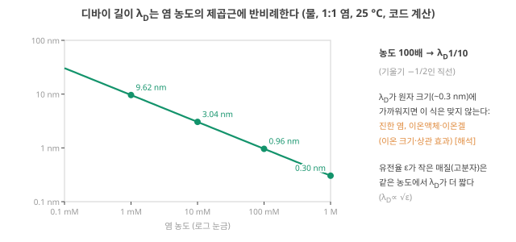

Day 39. 무작위 걸음과 확산 시간 L²/D, 디바이 길이의 유도와 그 한계
Phase 4 · 왜 이온성 고분자인가
이번 질문 이온이 퍼지는 시간은 왜 거리의 제곱에 비례하고, 전극 앞 이온층의 두께(디바이 길이)는 무엇이 정하며, 이 묽은 용액 식들을 농축 고분자 전해질에 그대로 써도 되나?
왜 배우나 응답 시간이 L²/D로 설명되는지와 Debye length 식을 써도 되는 농도인지 판단한다.
오늘의 장면 L, D, n, ε → 무작위 걸음·Boltzmann → τ ≈ L²/D → λ_D = √(εkT/2ne²)
오늘 반드시 거리가 2배면 확산 시간은 4배, 농도가 100배면 Debye length는 1/10이다. 두 식은 묽은 용액용이라 농축 고분자 전해질에는 유효값으로 쓴다.
나중에 봐도 됨 Bjerrum 길이 · Poisson 유도 · 농축 이온겔 보정식
넘어가는 기준 '오늘 반드시'를 내 말로 말할 수 있으면 충분합니다.
이후 쓰이는 곳 Day 41–42 이온쌍·VFT와 λ_D·D · Day 45–46 Donnan 퍼텐셜
지난 학습 복습
지난 학습 단위(Day 38 · 도핑·나노유체·메커니즘 대응표: 이온 device의 기억과 비선형 (2))의 핵심을 다른 예로 확인합니다. 고르는 즉시 맞았는지와 이유가 보입니다. 틀려도 아래 학습자료는 그대로 열려 있고, 틀린 문제에는 다시 볼 곳이 붙습니다.
사전 테스트 (선택)
사전 테스트 펼치기 · 배우기 전에 짐작해 보는 문제 (선택)
학습자료
Day 35–36에서 "이온이 느린 까닭의 한쪽은 재료(\(\mu\), \(D\)), 다른 쪽은 크기(\(L^2\))"라고 했고, Day 37–38에서는 메커니즘마다 시간척도가 ms에서 일 단위까지 퍼져 있는 것을 봤습니다. 오늘은 그 시간이 무엇으로 정해지는지를 식 세 개로 정리하고, 숫자를 직접 바꿔 가며 표를 만듭니다. 마지막에 오늘의 질문 "느림은 재료의 성질인가, 크기의 문제인가"에 폴더 device들의 숫자로 답해 봅니다.
이 주제의 질문 순서 — 이번 Day 39에서는 구간 1–2만 읽습니다. 나머지는 Day 40에서 이어집니다(구간 번호는 원래 한 묶음이던 순서 그대로입니다).
- 왜 확산 시간은 거리에 비례하지 않고 거리의 제곱에 비례하나? → 구간 1
- 디바이 길이 \(\lambda_D\)는 무엇이고 무엇이 정하나? → 구간 2
- 전극 계면의 충전 시간은 왜 \(\lambda_D L/D\)이고, 덩어리(bulk, 전극에서 먼 전해질 본체) 확산 시간 \(L^2/D\)와는 왜 그렇게 다른가? (Day 40에서)
- \(L\)(nm–mm)과 \(D\)(\(10^{-12}\)–\(10^{-9}\) m²/s)를 바꾸면 시간이 얼마나 바뀌나? 원하는 시간에 맞추려면 크기를 얼마로 해야 하나? (Day 40에서)
- 그래서 느림은 재료의 성질인가, 크기의 문제인가? 폴더의 측정값은 어림과 맞나? (Day 40에서)
작은 예 하나를 끝까지 씁니다. 25 °C 물에 녹인 10 mM KCl(Day 37–38과 같은 소금물), 전극 사이 거리 \(L\) = 1 mm, 이온의 확산계수 \(D = 2\times10^{-9}\) m²/s입니다. 같은 셀이 1구간에서는 확산 시간 500 s, 2구간에서는 계면층 두께 3.04 nm, 3구간에서는 계면 충전 1.5 ms, 4구간에서는 시간 지도의 한 칸이 되고, 5구간에서 실제 device의 측정과 비교됩니다.
1. 무작위 걸음: 확산 시간은 왜 거리의 제곱에 비례하나
이 구간을 읽고 나면 동전 던지기 걸음으로 "멀리 가려면 걸음 수가 거리의 제곱만큼 든다"를 직접 보이고, 그것을 확산 시간 \(\tau \approx L^2/D\)로 옮겨 숫자로 쓸 수 있다.
상황. 같은 이온 소재로 전극 간격 1 µm device와 1 mm device를 만들면, 응답 시간은 1000배가 아니라 약 \(10^6\)배 차이 납니다. 이것을 한 줄로 설명하는 식이 \(\tau \approx L^2/D\)입니다. 이 구간은 그 식이 왜 '제곱'인지를 동전 하나로 보입니다.
Day 35–36에서 물속 K⁺가 1초에 63 µm, 100초에 0.63 mm 퍼진다고 했습니다(Day 35 1구간: 확산 거리). 시간이 100배인데 거리는 10배밖에 늘지 않았습니다. 왜 그럴까요? 이 구간은 그 이유를 동전 하나로 보입니다.
확산 시간 τ_diff ~ L²/D
① 왜 필요한가. 이온 device의 상태(농도 분포, 도핑, 계면 충전)가 바뀌려면 이온이 어떤 거리를 움직여야 하고, 그 시간이 device의 응답 시간·기억 시간의 바탕입니다. 그 시간을 어림하는 식을 알면 "이 device는 왜 이렇게 느린가"와 "과제에 맞추려면 무엇을 바꿔야 하나"에 숫자로 답할 수 있습니다.
② 무엇인가: 동전 던지기 걸음. 한 줄 위에서 1초마다 동전을 던져 앞면이면 오른쪽으로 한 칸, 뒷면이면 왼쪽으로 한 칸 간다고 합시다. 물속 이온이 주변 물 분자와 부딪히며 제멋대로 움직이는 것을 가장 단순하게 흉내 낸 것입니다(무작위 걸음, random walk).
③ 무슨 일이 일어나나. 걸음이 서로 무관하므로 평균 위치는 0입니다(오른쪽과 왼쪽이 반반). 그러나 출발점에서 얼마나 멀어졌나는 0이 아닙니다. 그것을 재는 숫자로 위치의 제곱의 평균 \(\langle x^2 \rangle\), 곧 평균 제곱 변위(mean squared displacement, MSD)를 씁니다(Day 23–24의 분산과 같은 계산입니다, Day 23 기초). 걸음 하나의 제곱은 늘 1이고, 서로 무관한 걸음들을 더하면 분산도 더해지므로 \(N\)걸음 뒤 \(\langle x^2 \rangle = N\), 전형적인 거리는 \(\sqrt{N}\)입니다.
그림 1을 먼저 봅니다. (a)는 다섯 사람이 각자 동전을 던지며 걸은 길이고(가로: 걸음 수 \(N\), 세로: 위치 \(x\)), (b)는 2,000명의 전형적 거리 \(\sqrt{\langle x^2\rangle}\)를 걸음 수에 대해 그린 것입니다. (b)에서 볼 것은 하나입니다. 걸음이 4배(100 → 400)가 되어도 거리는 2배(9.7 → 20.5)만 늘어난다. 아래 단계 1–4가 그 숫자를 따라갑니다.

④ 작은 숫자로 따라가기.
단계 1 — 두 걸음. 가능한 길은 (오,오), (오,왼), (왼,오), (왼,왼) 넷이고 끝 위치는 +2, 0, 0, −2입니다. 제곱은 4, 0, 0, 4, 평균은 \(8 \div 4 = 2\). 걸음 수와 같습니다. 전형적 거리는 \(\sqrt{2} \approx 1.4\)칸이지, 2칸이 아닙니다.
단계 2 — 많은 걸음(시뮬레이션). 2,000명이 각자 동전을 던지게 한 코드 시뮬레이션에서 전형적 거리 \(\sqrt{\langle x^2\rangle}\)는 25걸음 뒤 4.9칸, 100걸음 뒤 9.7칸, 400걸음 뒤 20.5칸이었습니다(그림 1). \(\sqrt{N}\) = 5, 10, 20과 거의 같습니다.
단계 3 — 거꾸로 읽기. 거리 10칸을 가는 데 약 100걸음, 20칸은 약 400걸음. 거리를 2배로 가려면 걸음(시간)이 4배 듭니다. 거리 \(L\)을 가는 데 드는 시간은 \(L^2\)에 비례합니다.
단계 4 — 실제 단위로. 걸음 길이를 \(a\), 걸음 사이 시간을 \(\Delta t\)라 하면 \(\langle x^2 \rangle = N a^2 = (t/\Delta t)\,a^2\)입니다. 여기서 \(D = a^2/(2\Delta t)\)로 정의하면 \(\langle x^2 \rangle = 2Dt\), Day 35–36의 \(\sqrt{2Dt}\)가 바로 이것입니다(분모의 2는 1차원에서 \(\langle x^2\rangle = 2Dt\)로 쓰는 관례에 맞춘 것이고, 3차원에서는 세 방향이 더해져 \(\langle r^2\rangle = 6Dt\)). \(D\)의 단위가 m²/s인 것도 여기서 보입니다. 걸음 길이의 제곱 ÷ 걸음 사이 시간입니다. 거꾸로 풀면 거리 \(L\)을 퍼지는 시간은 \(t = L^2/(2D)\).
\[ \tau_{\text{diff}} \sim \frac{L^2}{D} \]
- 왜 지금 필요한가: 이온 device의 상태 변화에 걸리는 시간을 재료(\(D\))와 크기(\(L\))로 나눠 어림하기 위해.
- 기호: \(L\)은 이온이 움직여야 하는 특성 길이 [m], \(D\)는 확산계수 [m²/s].
- 단위: m² ÷ (m²/s) = s.
- 계산 순서: \(L\)을 제곱하고 \(D\)로 나눈다.
- 결과의 뜻: 자릿수 어림이다. 앞에 붙는 수(1/2, 1/4, \(1/\pi^2\) 등)는 기하(한쪽 끝에서 퍼지나, 양쪽에서 빠지나)에 따라 다르다. 예를 들어 Zhang 2024는 \(\tau = L^2/4D\)를 쓴다. Zhang 2024 (ACS Nano), p.15029 오늘은 앞의 수를 생략하고 "~"(자릿수가 같다)로 적는다.
⑤ 숫자 예(작은 예의 셀). 물속 K⁺(\(D = 2\times10^{-9}\) m²/s): \(L\) = 1 µm이면 \(10^{-12} \div 2\times10^{-9} = 0.5\) ms, \(L\) = 1 mm이면 \(10^{-6} \div 2\times10^{-9} = 500\) s. 길이가 1000배가 되자 시간이 100만 배가 되었습니다. 이 500 s가 작은 예의 셀(1 mm)에서 셀 전체의 농도가 다시 고르게 되는 시간의 자릿수입니다. 거꾸로 시간에서 거리를 구하려면 식을 뒤집어 \(L \approx \sqrt{D\tau}\)로 씁니다. 같은 이온이 5 s 동안 퍼지는 거리는 \(\sqrt{2\times10^{-9} \times 5} = \sqrt{10^{-8}} = 10^{-4}\) m = 100 µm입니다(4구간에서 device 설계에 다시 씁니다).
⑥ 이 식이 다 설명하지 못하는 것. \(L^2/D\)는 이온이 거리 \(L\)을 실제로 건너야 끝나는 변화(셀 전체 농도, Day 37–38의 농도 분극(concentration polarization))의 시간입니다. Day 37–38에서 본 전극 계면의 충전(EDL)은 같은 셀에서 수 ms로 훨씬 빨랐습니다. 이온이 셀을 건너지 않고도 끝나는 변화가 있다는 뜻이고, 그 이유를 2구간(계면층의 두께)과 3구간(계면 충전 시간)에서 봅니다.
⑦ 짧은 확인. 거리를 3배로 하면 확산 시간은? (답: 9배.)

비유가 깨지는 곳. 실제 이온은 한 줄이 아니라 3차원에서 움직이고, 걸음 길이와 간격이 일정하지 않으며, 다른 이온·고분자 사슬과 상호작용합니다. 그래도 "걸음들이 서로 무관하면 거리는 시간의 제곱근으로 는다"는 결론은 그대로 남습니다. 깨지는 경우는 걸음들이 서로 무관하지 않을 때(이온끼리 강하게 끌어당기는 진한 계, 고분자 사슬에 붙었다 떨어지는 경우)이고, 이때는 같은 \(L^2/D\) 꼴에 물속 값이 아닌 그 매질의 유효 확산계수(effective diffusion coefficient)를 넣거나 다른 모형이 필요합니다. 농축 고분자 전해질·이온겔이 바로 이런 경우라, 오늘의 물속 숫자는 출발점으로만 씁니다(5구간에서 측정과 견줍니다). 해석
1 mm 두께의 겔에서 이온이 다 빠져나가는 데 약 500초가 걸린다고 합시다. 두께를 0.1 mm로 줄이면 몇 초가 될까요? 그리고 확산계수가 100배 작은 고분자로 바꾸면(두께 1 mm)? 먼저 적고 아래 점검으로 확인하세요.
- 무작위 걸음
- 매 걸음 방향을 무작위로 정하는 움직임. 확산의 가장 단순한 모형. N걸음 뒤 전형적 거리는 √N 걸음 길이.
- 평균 제곱 변위 ⟨x²⟩
- 출발점에서 벗어난 거리의 제곱을 평균한 값. 1차원 확산에서 2Dt.
- 확산 시간 τ_diff ~ L²/D
- 거리 L을 확산으로 퍼지는 데 걸리는 시간의 자릿수. 앞의 수는 기하에 따라 다르다.
- 무작위 걸음의 전형적 거리는 걸음 수의 제곱근(시뮬레이션: 100걸음 9.7, 400걸음 20.5). 그래서 확산 시간 \(\tau \sim L^2/D\).
- 숫자: 물속 K⁺, 1 µm 0.5 ms, 1 mm 500 s. 길이 1000배 → 시간 100만 배.
- 자릿수 어림이다. 앞의 수(1/2, 1/4 …)는 기하에 따라 다르다 Zhang 2024 (ACS Nano), p.15029.
2. 디바이 길이: 이온이 전하를 가려 주는 거리
이 구간을 읽고 나면 디바이 길이가 무엇을 재는 길이인지 장면으로 설명하고, 식에 숫자를 넣어 농도·유전율이 바뀔 때 얼마나 바뀌는지 계산하며, 이 식이 어디서 깨지는지 말할 수 있다.
Day 37–38에서 디바이 길이를 "EDL의 두께", "좁은 채널이 이온을 고르기 시작하는 높이"로 썼습니다(Day 37 2구간: 디바이 길이). 숫자(10 mM에서 3.0 nm)와 "농도 100배 → 1/10"만 가져왔고 식이 어디서 오는지는 미뤄 두었습니다. 이제 그것이 왜 그 길이인지 봅니다.
디바이 길이 λ_D
① 왜 필요한가. 전극 표면, 고분자에 붙은 전하, 채널 벽의 전하는 모두 주변 이온을 끌어당기고 밀어냅니다. 그 영향이 얼마나 멀리까지 미치는지를 알아야 EDL의 두께, 접합의 고갈층, 나노채널의 선택성을 어림할 수 있습니다.
② 장면. 소금물 속에 음전하를 띤 판이 하나 있습니다. 양이온은 끌려오고 음이온은 밀려나서, 판 앞에 양이온이 조금 더 많은 층이 생깁니다. 그 층의 양전하가 판의 음전하를 가려서(차폐, screening), 판에서 조금만 떨어져도 판의 전기적 영향이 거의 느껴지지 않습니다. 영향이 남는 거리가 디바이 길이(Debye length)입니다. 이온이 많을수록 가리는 일을 빨리 끝내므로 짧아지고, 열 운동이 셀수록(온도가 높을수록) 이온이 흐트러져 가리기 어려우므로 길어집니다. 용매가 전기를 잘 약화시킬수록(유전율이 클수록) 판의 끌어당김 자체가 약해 층이 퍼지므로 길어집니다.
유전율이란. 물 분자는 한쪽이 약간 (+), 다른 쪽이 약간 (−)인 극성 분자라, 이온 둘레에서 반대 전하 쪽을 이온에 향하도록 돌아섭니다. 그만큼 이온의 전기장이 가려져, 같은 거리에 있는 두 전하 사이의 전기 에너지가 진공일 때의 약 \(1/\varepsilon_r\)로 줄어듭니다. 이 '진공보다 몇 배 약하게 만드나'가 비유전율(relative permittivity) \(\varepsilon_r\)(무차원, 25 °C 물 약 78.5)이고, 진공의 유전율 \(\varepsilon_0 = 8.85\times10^{-12}\) F/m를 곱한 \(\varepsilon = \varepsilon_r\varepsilon_0\) [F/m]가 그 매질의 유전율(permittivity)입니다. Day 29–30에서 capacitor 절연막의 capacitance를 셀 때 쓴 양과 같습니다(Day 30 4구간: 크기 어림). 고분자처럼 \(\varepsilon_r\)이 작은 매질에서는 전기적 끌림이 덜 약해집니다.
그림 2를 먼저 봅니다. 기호 둘만 알면 읽힙니다. \(\psi(x)\)는 판에서 거리 \(x\)만큼 떨어진 곳의 전위 [V]이고(판에서 아주 먼 용액을 0 V로 둠), \(\psi_0\)는 판 바로 앞의 전위입니다. (a)는 가로가 판에서의 거리(nm), 세로가 \(\psi/\psi_0\)(판 앞 전위의 몇 분의 몇이 남았나)이고, (b)는 같은 자리의 양이온·음이온 농도를 먼 곳 농도 \(n\)으로 나눈 값입니다. 볼 것은 셋입니다. 전위는 몇 nm 안에 거의 사라진다. 염이 진할수록 더 빨리 사라진다. 판 앞에서 양이온은 조금 늘고(1.48배) 음이온은 조금 준다(0.68배). 아래 단계 1–5는 이 곡선의 모양과 숫자(37%, 1.48, 0.68, 3.04 nm)가 어디서 나오는지 따라갑니다.

③ 식이 나오는 길: 두 규칙이 서로를 정한다. 전기화학의 Gouy–Chapman 모형에서 본 계산을 한 단계씩 따라갑니다. 판에서 거리 \(x\)인 곳의 전위를 \(\psi(x)\) [V]라 하고, 판에서 아주 먼 용액을 0 V로 둡니다. 판 앞에서는 두 규칙이 맞물립니다. (가) 이온은 그 자리의 전위에 따라 모이거나 흩어진다(볼츠만 분포(Boltzmann distribution): 열에너지 대 전기 에너지). (나) 그렇게 치우친 이온의 전하가 다시 전위의 모양을 정한다(푸아송 식(Poisson equation)). 1:1 염(K⁺Cl⁻처럼 양·음이온이 모두 1가), 25 °C의 물, 10 mM을 예로 씁니다.
단계 1 — 열에너지와 전기 에너지를 견준다(볼츠만 분포). 전위가 \(\psi\)인 곳에 놓인 1가 양이온의 전기적 위치에너지는 \(e\psi\), 음이온은 \(-e\psi\)입니다(\(e = 1.60\times10^{-19}\) C, 기본 전하). 이 에너지를 이온 하나의 열에너지 \(kT\)(\(k\) 볼츠만 상수, \(T\) 절대온도. 25 °C에서 \(4.12\times10^{-21}\) J)와 견줍니다. 전하 하나당 전압으로 적으면 \(kT/e\) = 25.7 mV, Day 35–36의 열전압(thermal voltage)입니다(Day 35 기초). 열평형에서 농도는 볼츠만 분포를 따릅니다: \(c_+ = n\,e^{-e\psi/kT}\), \(c_- = n\,e^{+e\psi/kT}\)(\(n\): 판에서 먼 곳의 염의 수 농도(number density), 개/m³). 숫자로: 판 근처 전위가 \(\psi\) = −10 mV면 \(e\psi/kT = -10/25.7 = -0.39\)이고, \(c_+ = n\,e^{0.39} = 1.48n\), \(c_- = n\,e^{-0.39} = 0.68n\)입니다. 전기 에너지가 열에너지보다 작으니 이온은 조금만 치우칩니다. 열운동이 늘 이온을 다시 섞기 때문에, 판의 전하를 다 가리려면 어느 정도 두께의 층이 필요합니다.
단계 2 — 작은 전위에서 직선으로 편다(선형화, linearization). \(|e\psi| \ll kT\)이면 \(e^{y} \approx 1 + y\)로 쓸 수 있습니다. 그러면 그 자리의 순전하 밀도 [C/m³]는 \(\rho = e(c_+ - c_-) \approx -\dfrac{2ne^2}{kT}\,\psi\). 앞의 2는 양이온이 늘어나는 몫과 음이온이 줄어드는 몫이 둘 다 같은 부호의 전하를 보태기 때문입니다. 숫자로: −10 mV에서 정확한 값은 \(c_+ - c_- = 0.80n\), 직선 근사는 \(0.78n\)으로 3% 차이입니다. 전위가 25.7 mV에 가까워지면 이 근사가 나빠집니다(아래 ⑥ "어디서 깨지나").
단계 3 — 전하가 전위를 휘게 한다(푸아송 식). \(\dfrac{d^2\psi}{dx^2} = -\dfrac{\rho}{\varepsilon}\), 여기서 \(\varepsilon = \varepsilon_r\varepsilon_0\) [F/m]는 용매의 유전율입니다. 말로 하면 "전위 곡선이 휘는 정도 = 그 자리의 전하 ÷ 유전율". 단위: (C/m³) ÷ (C/(V·m)) = V/m². 전하가 없는 곳에서는 전위가 직선이고, 전하가 있는 곳에서 휩니다.
단계 4 — 둘을 맞물린다. 단계 2의 \(\rho\)를 단계 3에 넣으면 \(\dfrac{d^2\psi}{dx^2} = \dfrac{2ne^2}{\varepsilon kT}\,\psi\). "휘는 정도가 자기 자신에 비례"하는 식이고, 판에서 멀어질수록 0으로 가는 해는 \(\psi(x) = \psi_0\,e^{-x/\lambda_D}\)입니다(\(\psi_0\): 판 바로 앞의 전위). 이 해를 두 번 미분하면 \(\psi/\lambda_D^2\)이므로, 식이 맞으려면 \(1/\lambda_D^2 = 2ne^2/(\varepsilon kT)\)여야 합니다. 그래서 디바이 길이는 전위(와 이온의 치우침)가 \(1/e\) = 37%로 줄어드는 거리입니다. \(\lambda_D\) 하나 가면 37%, 둘이면 14%, 셋이면 5%(그림 2).
단계 5 — 숫자를 넣는다(10 mM). \(\varepsilon = 78.5 \times 8.85\times10^{-12} = 6.95\times10^{-10}\) F/m. \(n = 0.01\) mol/L × 1000 L/m³ × \(6.02\times10^{23}\) = \(6.02\times10^{24}\) 개/m³. \(2ne^2 = 2 \times 6.02\times10^{24} \times (1.60\times10^{-19})^2 = 3.09\times10^{-13}\) C²/m³. 따라서 \(\lambda_D^2 = 6.95\times10^{-10} \times 4.12\times10^{-21} \div 3.09\times10^{-13} = 9.25\times10^{-18}\) m², \(\lambda_D\) = 3.04 nm. 판 전위가 −10 mV라면 3 nm 떨어진 곳에서 −3.7 mV, 10 nm에서 −0.37 mV로, 용액 쪽에서는 판의 존재가 거의 느껴지지 않습니다(코드 계산).
이렇게 나온 식을 정리하면 1:1 염에서
\[ \lambda_D = \sqrt{\frac{\varepsilon_r \varepsilon_0 k T}{2 n e^2}} \]
- 왜 지금 필요한가: 계면층의 두께(Day 37–38 EDL)와 계면 capacitance(3구간 \(C = \varepsilon/\lambda_D\))을 재료와 농도만으로 어림하기 위해.
- 기호: \(\varepsilon_r\)은 용매의 비유전율(물 약 78.5, 위 '유전율이란') 25 °C 정밀 측정값 78.3과 0.3% 차이 Malmberg 1956, p.1, \(\varepsilon_0\)는 진공 유전율(\(8.85\times10^{-12}\) F/m), \(kT\)는 이온 하나의 열에너지[J], \(n\)은 염의 수 농도[개/m³] (1 mM = \(6.0\times10^{23}\) 개/m³), \(e\)는 기본 전하[C]. 2는 양·음이온 두 종류의 몫(단계 2).
- 단위: (F/m × J) ÷ (m⁻³ × C²)이고, F = C/V, J = C·V이므로 m²가 되어 제곱근은 m입니다.
- 계산 순서: 분자(유전율 × 열에너지)를 분모(2 × 농도 × 전하²)로 나누고 제곱근.
- 결과의 뜻: 열에너지가 셀수록(분자) 이온이 덜 치우쳐 층이 두꺼워지고, 가려 줄 이온이 많을수록(분모) 얇아집니다. 농도가 100배면 \(\lambda_D\)는 10분의 1(제곱근). 유전율이 4배 작으면 절반.
심화 · 유전율이 왜 분자에 있나: Bjerrum 길이로 보기
위 '유전율이란'에서 물이 두 전하 사이의 전기 에너지를 진공의 약 1/78로 줄인다고 했습니다. 숫자로 보면, 1가 이온 두 개 사이의 전기 에너지가 열에너지 \(kT\)와 같아지는 거리(Bjerrum 길이 \(e^2/(4\pi\varepsilon kT)\))는 25 °C 물에서 0.71 nm, 진공이라면 56 nm입니다(코드 계산). 물속에서는 이온이 0.7 nm보다 멀어지면 전기적 끌림이 열운동에 지므로, 판 앞의 이온도 판에 단단히 붙지 못하고 넓게 퍼집니다. 이것이 \(\varepsilon_r\)이 \(\lambda_D\) 식의 분자에 들어 있는 이유입니다. [해석: 교과서 정의로 Claude가 계산]
④ 작은 숫자로 농도를 바꿔 보기(물, 25 °C, 코드 계산).
단계 1 — 1 mM. \(n = 10^{-3}\) mol/L × 1000 L/m³ × \(6.02\times10^{23}\) = \(6.0\times10^{23}\) /m³. 10 mM보다 \(n\)이 10배 작으니 위 3.04 nm에 \(\sqrt{10}\)을 곱해 \(\lambda_D \approx\) 9.6 nm.
단계 2 — 10 mM, 100 mM, 1 M. 농도가 10배씩 오를 때마다 \(\sqrt{10} \approx 3.16\)으로 나눠 3.0 nm, 0.96 nm, 0.30 nm.
단계 3 — 다른 매질. 같은 10 mM이라도 비유전율이 10인 고분자 매질이라면 \(\sqrt{10/78.5} \approx 0.36\)배, 약 1.1 nm입니다 [해석: 비유전율 10은 예시값].
단계 1–2의 숫자를 한 그래프에 놓은 것이 그림 3입니다. 두 축 모두 로그 눈금이라 눈금 한 칸이 10배입니다. 농도가 10배 오를 때마다 \(\lambda_D\)가 \(\sqrt{10}\)분의 1로 줄어, 가로 두 칸(100배) 갈 때 세로로 한 칸(1/10) 내려갑니다. 그래서 점들이 기울기 −1/2인 직선 위에 놓입니다.

⑤ 이름과 정확한 뜻. 디바이 길이 = 이온이 전하를 차폐하는 특성 거리. EDL의 퍼진 층(확산층, diffuse layer)의 두께, 나노채널 선택성의 기준 길이로 쓰입니다.
⑥ 어디서 깨지나. 유도 과정에서 넣은 가정이 곧 깨지는 조건입니다. (1) 단계 2의 선형화: 판 전위가 열전압 25.7 mV보다 커지면 직선 근사가 나빠집니다. 그때도 층 두께의 자릿수는 \(\lambda_D\)로 쓰지만, 판 앞 이온이 지수적으로 더 몰려 capacitance가 전압에 따라 커집니다(Day 37–38의 \(\cosh\) 이야기). (2) 단계 1의 볼츠만 분포: 이온을 크기 없는 점으로 보고, 이온끼리의 상관을 평균 전위로만 다룹니다. \(\lambda_D\)가 이온 하나의 크기에 가까워지면 이 가정이 무너집니다. 1 M에서 \(\lambda_D\) = 0.30 nm인데, 물 분자 껍질을 두른 수화 이온(hydrated ion)의 반지름은 대략 0.3–0.4 nm입니다 [미확인: 교과서 표 값의 범위이며 측정법·정의(반지름/지름, Stokes 반지름 등)에 따라 달라 원전을 대조하지 못함]. 이온 하나보다 얇은 '층'은 물리적으로 뜻이 없으니, 1 M 이상의 진한 염이나 이온액체(ionic liquid)·이온겔(이온만으로 된 액체와 그것을 고분자망에 가둔 것), 농축 고분자 전해질에서는 이 묽은 용액 식이 맞지 않습니다. 해석 Day 35–36에서 본 대로 Wang 2025도 고농도 계에서는 기본 이론을 보정해야 한다고 씁니다. Wang 2025 (Chem. Soc. Rev.), p.305 이온겔로 device를 만든다면 오늘의 \(\lambda_D\) 숫자를 그대로 쓰지 말고, 측정한 계면 capacitance에서 거꾸로 유효 두께를 어림하는 편이 낫습니다. 해석
⑦ 짧은 확인. 10 mM에서 3.0 nm였다면 40 mM에서는? (답: \(\sqrt{4} = 2\)로 나눠 1.5 nm.)
- 디바이 길이 = 이온이 전하를 가려 주는 거리. 볼츠만 분포(열에너지 대 전기 에너지)와 푸아송 식(전하가 전위를 휘게 함)을 작은 전위에서 맞물리면 \(\psi \propto e^{-x/\lambda_D}\), \(\lambda_D = \sqrt{\varepsilon_r\varepsilon_0 kT/(2ne^2)}\).
- 물속 1:1 염: 1 mM 9.6 nm, 10 mM 3.0 nm, 100 mM 0.96 nm, 1 M 0.30 nm(코드 계산). 농도 100배 → 1/10.
- 유전율이 작은 매질에서 더 짧고, 진한 염·이온액체에서는 식 자체가 맞지 않는다 해석 Wang 2025 (Chem. Soc. Rev.), p.305.
학습 완료
이 학습 단위를 마쳤으면 눌러 주세요. 쓰기·영상·심화·추가 연습은 필요 없고, 퀴즈 점수와도 따로 기록됩니다. '완료'는 이 단위를 끝냈다는 표시이지 모든 내용을 완벽히 익혔다는 뜻이 아닙니다.